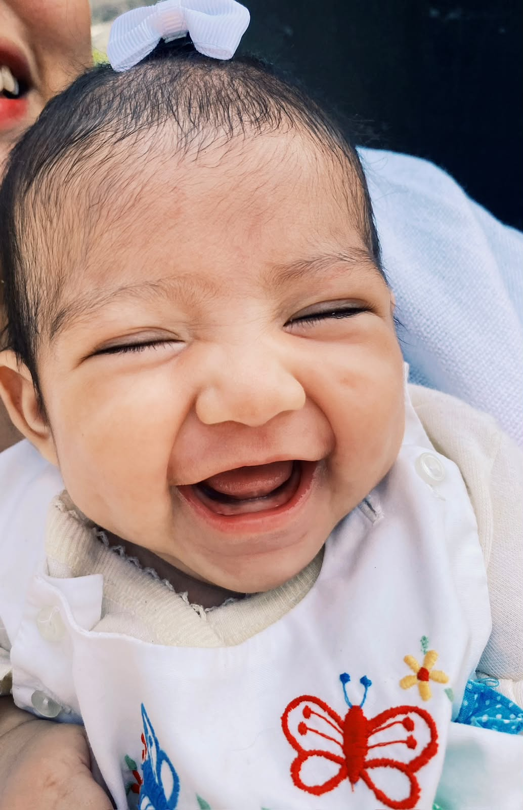
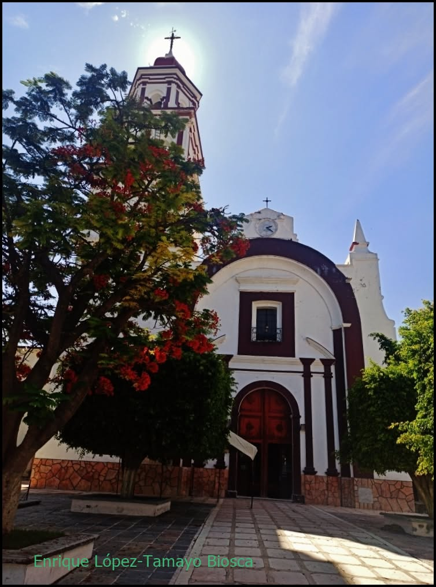
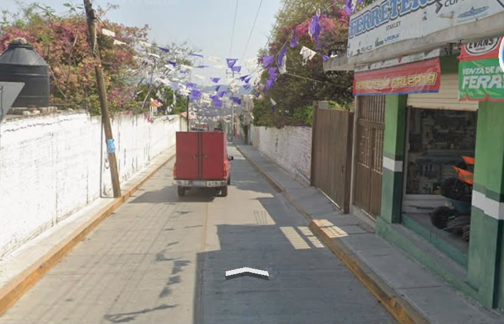
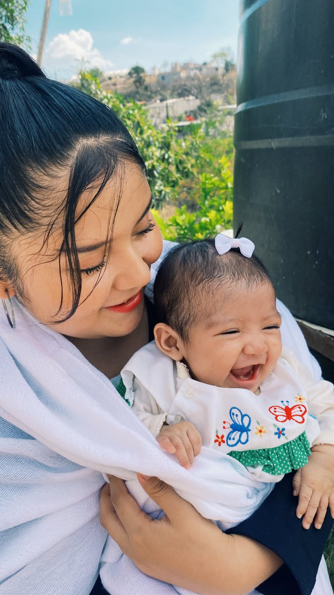

Mi Bautizo
🌸

🌸Damaris Dariela Mota Luna
¡Mi corazón dice sí a Dios!
"Hoy pongo tu pequeña mano en las manos de Dios, mi niña, para que Él te cuide siempre cada paso de tu vida."
10 de octubre del 2026
MI MAMÁ
Karla Itzel Mota Luna
MI PADRINO
Jose Luis Merino Mota

💐MISA
Hora: 12:00 PM
Ex Convento Dominico S. XVI y Parroquia de Santo Domingo de Guzmán
San Pedro, 74690 Tepexi de Rodríguez, Pue.

💐EVENTO
Calle Galeana 310 (Número 6),
Barrio San Sebastián,
Salón Jardín "De La Rosa"
74690 Tepexi de Rodríguez, Pue.
❦
Damaris Dariela Mota Luna
❦¡Confirmación de Asistencia!
🌸
🌺
🌺
🌸

"Deja que los niños vengan a mí"
Damaris Dariela Mota Luna